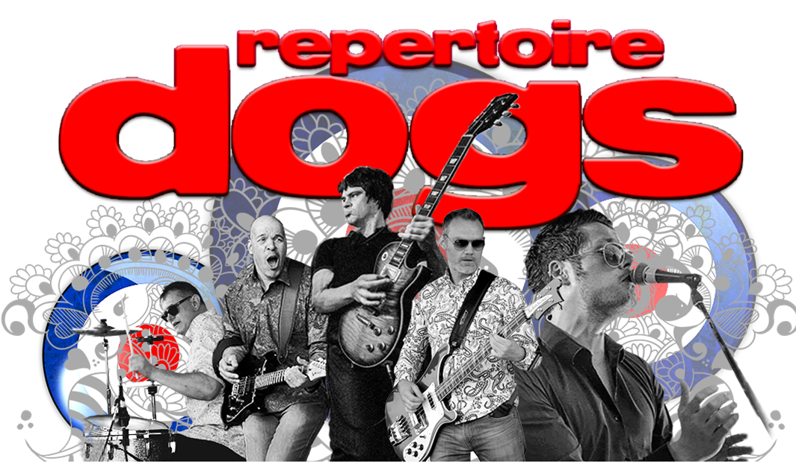

<div class="event-info">
	<div>
		<center>
			<picture>
				<source srcset="img/bands/8.webp" type="image/webp">
				<source srcset="img/bands/8.jpg" type="image/jpeg">
				
			</picture>
		</center>
	<br>
	<b><i>"See you down the front!"</i></b>
	<br>
	Repertoire Dogs are a mod, rock, pop and indie covers band from North Essex. They have a tradition of putting on fast paced lively shows that always get the audience fired up and having a great time. Brit bands such as the Who, The Jam, The Kinks and Oasis have a strong presence in their sets alongside current bands such as The Killers, Kasabian, Muse, Red Hot Chili Peppers to name but a few.
	</div>
</div>